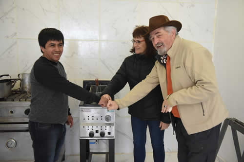

Real Chubut - Agencia de Noticias


El Club Ciudadela celebró sus 51 años con un firme apoyo del Municipio

Autoridades municipales acompañaron los festejos por el 51°aniversario del Club Manantiales Behr de Ciudadela, donde se hizo entrega de equipamiento de cocina para las actividades que desarrolla la institución. En la ocasión, el presidente de Comodoro Deportes, Othar Macharashvili afirmó que "los clubes sostienen a la sociedad en tiempo de crisis".
Con un gran respaldo al deporte local, este domingo por la tarde se llevaron adelante una serie de actividades recreativas y para las familias en el Club Ciudadela con motivo de sus 51 años de existencia en la ciudad. En representación del intendente Carlos Linares, estuvieron presentes el presidente de Comodoro Deportes Othar Macharashvili y la secretaria privada, Liliana Peralta, junto al presidente de la entidad deportiva, Dante Sosa y público en general.
En ese contexto, Macharashvili brindó unas palabras alusivas a la fecha manifestando que "hoy vemos con gran satisfacción cómo ha crecido este club de la zona norte, con infraestructura como el quincho para el cual hemos dado algunos elementos para que comience su ampliación" al tiempo que anticipó que "en unos 20 días más se estará comenzando con la obra del césped sintético que ya se compró y que permitirá la construcción de una cancha dual para que se pueda jugar al fútbol barrial, hockey y hándbol"
"Todas estas acciones llegan directo al vecino porque son para todo el barrio", expresó y opinó que "cuando el Estado está presente y da su aporte a los clubes, ellos triplican esa ayuda. Es fundamental el acompañamiento para que no decaigan las comisiones directivas y se incremente la participación de los vecinos".
En ese sentido, el funcionario sostuvo que "los clubes e instituciones barriales son los que sostienen la actividad, la contención e inclusión de la sociedad en tiempos de crisis. Estamos atravesando momentos difíciles a nivel económico en general y, por tal, es muy necesario acentuar la presencia desde el gobierno local".
Espacios de contención y solidaridad
En concordancia, la secretaria privada Liliana Peralta señaló que "actualmente podemos ver cómo ha crecido en estos últimos años, mirando a su alrededor, vemos con orgullo el trabajo articulado que tienen con otros clubes, la solidaridad de su gente y la contención que brindan a las familias del barrio".
"Por decisión del intendente Carlos Linares, seguimos aportando al crecimiento de distintas instituciones de la ciudad; deportivas, culturales o sociales, porque estamos convencidos de que son un lugar de encuentro para las familias y de gran ayuda para los jóvenes", expresó.